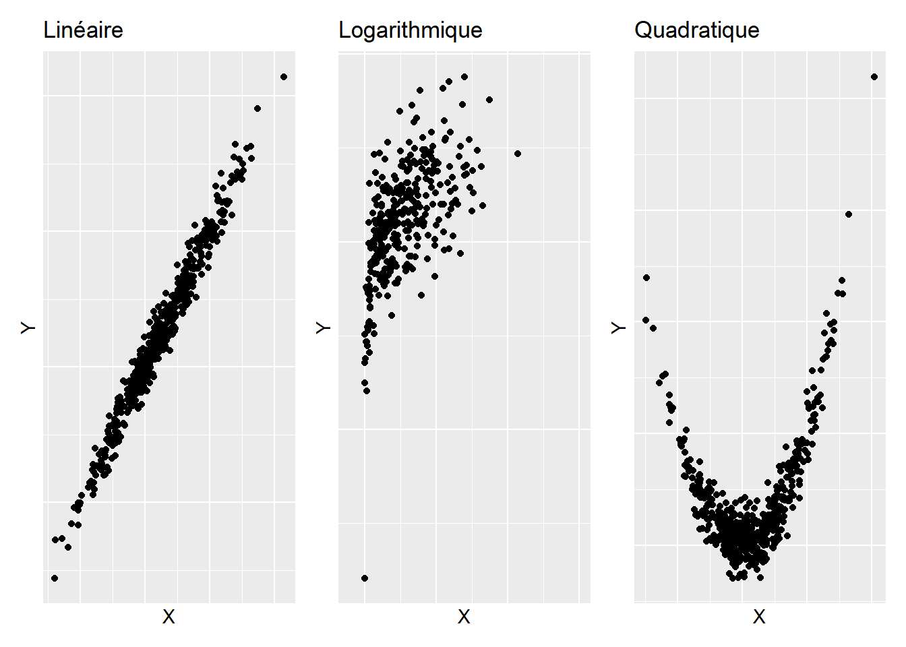
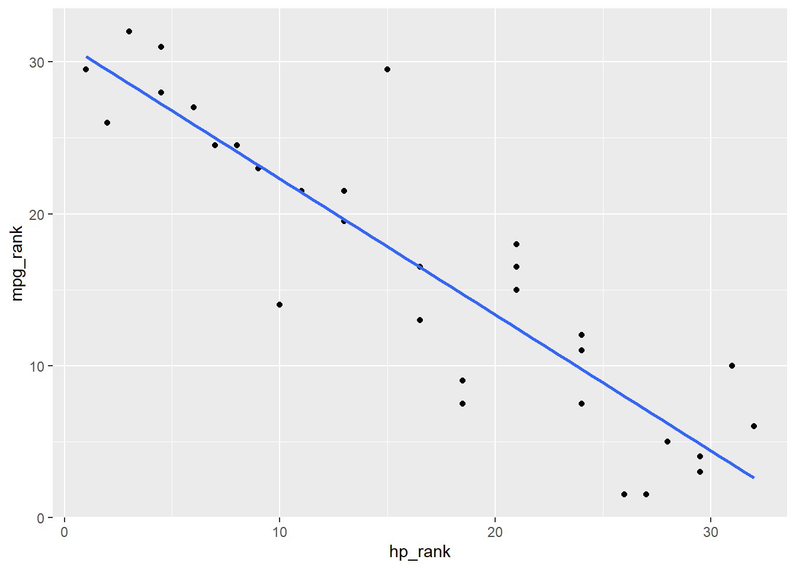
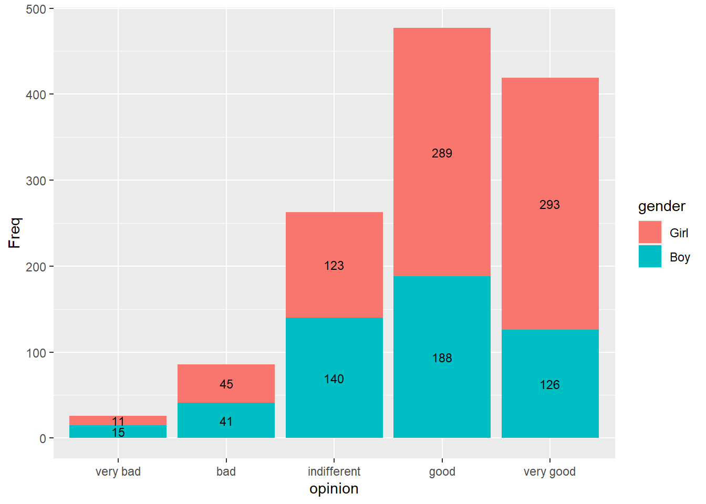

4 Analyses bivariées
Réaliser une analyse bivariée désigne le fait d’étudier la relation qui peut exister entre deux variables. Dans ce chapitre, nous allons voir les procédures graphiques et calculatoires qui permettent d’étudier et de quantifier le degré de relation pouvant exister entre deux variables dans les cas suivants : entre deux variables quantitatives, et entre deux variables qualitatives. Comme dans le chapitre précédent, l’objectif est ici d’explorer et de décrire les données et leurs relations à l’échelle d’un échantillon, sans pour autant chercher à déterminer l’incertitude qu’il peut exister dans les statistiques calculées en vue de les utiliser pour réaliser une inférence dans la population représentée.
4.1 Relation entre deux variables quantitatives
4.1.1 Étudier graphiquement la relation
Comme dans le cadre d’analyses univariées, une bonne pratique, lorsqu’on étudie une relation bivariée, est de faire un graphique. Avec des variables quantitatives, il s’agit de montrer les valeurs d’une variable en fonction des valeurs de l’autre variable, chose que permet un simple nuage de points. Plusieurs types de relations peuvent alors être rencontrés, ces relations pouvant potentiellement s’apparenter à autant de fonctions mathématiques que l’on connaît. Parmi les plus connues, on a par exemple les relations linéaires, les relations logarithmiques, ou encore les relations quadratiques, qui sont illustrées sur la Figure 4.1.
Avec R, pour obtenir un nuage de points à partir d’un jeu de données, il est possible d’utiliser la fonction ggplot() en l’associant à la fonction geom_point() du package ggplot2, comme dans l’exemple ci-dessous qui utilise le jeu de données mtcars (qui est intégré à R de base) et les variables hp (gross horsepower) et mpg (miles/US gallon). Dans cet exemple dont le résultat est montré sur la Figure 4.2, on peut voir que la relation semble globalement linéaire négative (voire curvilinéaire négative si l’on donne de l’importance au point isolé à droite du graphique).
ggplot(data = mtcars, aes(x = hp, y = mpg)) +
geom_point()4.1.2 Étudier numériquement la relation
4.1.2.1 Le coefficient de corrélation de Pearson
Lorsque la relation étudiée semble linéaire, l’étude numérique classique consiste à calculer le coefficient de corrélation de Pearson, noté \(r\), dont la valeur vise à renseigner dans quelle mesure le nuage de points représentant le lien entre les deux variables étudiées suit une droite. Avant de se lancer dans le calcul du coefficient de corrélation de Pearson pour étudier la relation entre une variable \(X\) et une variable \(Y\), il peut donc être utile de compléter le nuage de points montré sur la Figure 4.2 avec une droite d’équation de type \(Y = aX + b\) (Figure 4.3). Cette équation serait la meilleure modélisation possible de la relation linéaire entre \(X\) et \(Y\), de telle sorte que parmi l’infinité d’équations qui pourraient lier \(X\) à \(Y\), c’est cette équation qui au total donnerait la plus petite erreur lorsque l’on voudrait prédire \(Y\) à partir de \(X\). Si \(X\) et \(Y\) sont liées de manière linéaire, alors le nuage des points relatifs aux deux variables devrait s’étaler le long de cette droite. Pour obtenir cette droite en plus du nuage de points, il est possible d’utiliser la fonction geom_smooth() du package ggplot2.
ggplot(data = mtcars, aes(x = hp, y = mpg)) +
geom_point() +
geom_smooth(formula = y ~ x, method = "lm", se = FALSE)Dans la fonction geom_smooth() qui a été utilisée dans l’exemple ci-dessus, on note que l’argument formula pourrait être considéré comme facultatif car il s’agit ici de la configuration par défaut de la fonction. En revanche, l’argument method doit être ici configuré avec "lm" (pour linear model) car ce n’est pas la méthode graphique configurée par défaut dans la fonction. Enfin, l’argument se permet de montrer ou non un intervalle de confiance autour de la droite de régression, ce qui n’a pas été activé ici (par défaut, l’argument se est configuré pour montrer cet intervalle de confiance). Dans l’exemple montré ci-dessus, la représentation graphique encourage fortement à penser que l’un des types de relations à envisager prioritairement dans l’étude des deux variables est la relation linéaire. Cette information rend pertinente l’utilisation du coefficient de corrélation de Pearson pour une étude numérique de la relation en question.
La valeur du coefficient de corrélation de Pearson peut aller de 1 (suggérant une relation linéaire positive parfaite) à -1 (suggérant une relation linéaire négative parfaite). Des valeurs proches de 0 suggèreraient une abscence de relation linéaire. La formule du coefficient de corrélation de Pearson (\(r\)) pour un échantillon est la suivante :
\[r_{X,Y} = {\frac{COV_{X,Y}}{\hat{\sigma}_{X} \hat{\sigma}_{Y}}} = {\frac{\sum_{i=1}^{N} (X{i} - \overline{X}) (Y{i} - \overline{Y})}{N-1}} {\frac{1}{\hat{\sigma}_{X} \hat{\sigma}_{Y}}},\]
\(COV\) désignant la covariance entre les variables \(X\) et \(Y\), \(X{i}\) et \(Y{i}\) les valeurs de \(X\) et \(Y\) pour une observation \(i\), \(\overline{X}\) et \(\overline{Y}\) les moyennes respectives des variables \(X\) et \(Y\), \(N\) le nombre d’observations, et \(\hat{\sigma}_{X}\) et \(\hat{\sigma}_{Y}\) les écarts-types respectifs des variables \(X\) et \(Y\). Cette formule indique que le coefficient de corrélation de Pearson s’obtient en divisant la covariance des deux variables étudiées par le produit de leurs écarts-types respectifs.
Le Tableau 4.1 montre les premières étapes du calcul de la covariance pour des couples de variables fictifs \((X1,Y1)\), \((X1,Y2)\), et \((X1,Y3)\). En particulier, la partie droite du tableau (de X1Y1 à X1Y3) montre le calcul du produit \((X{i} - \overline{X}) (Y{i} - \overline{Y})\) pour les différents couples de variables et cela pour chaque ligne du jeu de données.
X1 |
Y1 |
Y2 |
Y3 |
X1Y1 |
X1Y2 |
X1Y3 |
|---|---|---|---|---|---|---|
0 |
0 |
0 |
0 |
36 |
40.285714 |
-36 |
2 |
2 |
1 |
-2 |
16 |
22.857143 |
-16 |
4 |
4 |
15 |
-4 |
4 |
-16.571429 |
-4 |
6 |
6 |
5 |
-6 |
0 |
0.000000 |
0 |
8 |
8 |
11 |
-8 |
4 |
8.571429 |
-4 |
10 |
10 |
3 |
-10 |
16 |
-14.857143 |
-16 |
12 |
12 |
12 |
-12 |
36 |
31.714286 |
-36 |
Ce que ce tableau montre, c’est que plus les deux variables étudiées évolueront de manière consistante dans des sens identiques comme avec \(X1\) et \(Y1\), ou de manière consistante dans des sens opposés comme avec \(X1\) et \(Y3\), plus les produits \((X{i} - \overline{X}) (Y{i} - \overline{Y})\) donneront respectivement des grands scores positifs ou des grands scores négatifs, et moins les scores \((X{i} - \overline{X}) (Y{i} - \overline{Y})\) à additionner pour le calcul de la covariance s’annuleront. En effet, avec une relation relativement linéaire et positive les scores seront plus systématiquement positifs, et avec une relation relativement linéaire et négative les scores seront plus systématiquement négatifs. Toutefois, lorsqu’on aura des variables qui n’évolueront pas de manière consistante dans le même sens ou dans un sens opposé comme avec \(X1\) et \(Y2\), les scores positifs et négatifs liés aux calculs \((X{i} - \overline{X}) (Y{i} - \overline{Y})\) auront tendance à s’annuler et donneront lieu à une somme des scores \((X{i} - \overline{X}) (Y{i} - \overline{Y})\) diminuée, et donc à une covariance et à un coefficient de corrélation de Pearson tirés vers 0. Ces différents cas de figure et les calculs \((X{i} - \overline{X}) (Y{i} - \overline{Y})\) correspondants sont illustrés sur la Figure 4.4. Sur cette figure, chaque carré correspond au calcul \((X{i} - \overline{X}) (Y{i} - \overline{Y})\), le carré étant bleu lorsque le résultat du calcul est positif, et rouge lorsque le résultat est négatif. L’aire d’un carré illustre la grandeur du score issu du calcul. Sur les graphiques de gauche et de droite de la figure, on distingue une relation linéaire parfaite, ce qui maximise les scores à additionner pour le calcul de la covariance, dans le positif pour le graphique de gauche et dans le négatif pour le graphique de droite. Sur le graphique du milieu, on remarque que le manque de relation linéaire donne lieu à des carrés à la fois bleus et rouges, indiquant que les scores associés aux calculs \((X{i} - \overline{X}) (Y{i} - \overline{Y})\) de la covariance s’annulent et diminuent ainsi la valeur finale de la covariance.
Dans R, le coefficient de corrélation de Pearson peut être obtenu avec la fonction cor(). Dans l’exemple ci-dessous qui reprend les variables du jeu de données mtcars utilisées plus haut, on observe un coefficient négatif, relativement proche de -1, suggérant une relation relativement linéaire et négative entre les variables étudiées.
cor(x = mtcars$hp, y = mtcars$mpg, method = "pearson")[1] -0.7761684Toutefois, la fonction cor.test() sera plus intéressante pour la suite car elle permet de calculer des indices statistiques de probabilité qui seront nécessaires dès lors qu’il s’agira de chercher à inférer la valeur d’une corrélation dans une population d’où l’échantillon étudié provient. La valeur de la corrélation est donnée à la fin de la liste des informations qui apparaissent suite à l’activation de la fonction.
cor.test(x = mtcars$hp, y = mtcars$mpg, method = "pearson")
Pearson's product-moment correlation
data: mtcars$hp and mtcars$mpg
t = -6.7424, df = 30, p-value = 1.788e-07
alternative hypothesis: true correlation is not equal to 0
95 percent confidence interval:
-0.8852686 -0.5860994
sample estimates:
cor
-0.7761684 Sur la base de travaux antérieurs, Hopkins et al. (2009) ont fait une proposition de classification pour qualifier la valeur du coefficient de corrélation qui serait obtenue dans le cadre d’une relation linéaire. Cette proposition est montrée dans le Tableau 4.2 :
Petite |
Moyenne |
Grande |
Très grande |
Extrêmement grande |
|---|---|---|---|---|
0.1 |
0.3 |
0.5 |
0.7 |
0.9 |
Pour visualiser le lien que l’on peut faire entre la forme du nuage de points et la valeur du coefficient de corrélation de Pearson que l’on peut obtenir, la page web proposée par Kristoffer Magnusson (https://rpsychologist.com/correlation) peut être particulièrement intéressante. Cette page web donne la possibilité de faire varier manuellement la valeur du coefficient de corrélation de Pearson pour ensuite voir un nuage de points type correspondant à cette valeur. Faites un essai !
À noter que la valeur du coefficient de corrélation de Pearson est dépendante du degré de variabilité des valeurs autour des tendances centrales des variables concernées. (Halperin, 1986). En ce sens, si dans deux études différentes les variables étudiées n’ont pas les mêmes niveaux de variabilité, les valeurs des coefficients de corrélation de Pearson ne seront pas vraiment comparables, en sachant que c’est l’étude qui présentera l’échantillon avec la plus grande variabilité qui aura plus de chances de présenter une valeur de coefficient de corrélation de Pearson plus élevée.
Un cas particulier illustrant l’influence du degré de dispersion sur la relation étudiée est montré sur la Figure 4.5. Cet exemple a pour but de montrer que l’étude d’une relation entre deux variables quantitatives peut aboutir à des conclusions radicalement différentes selon que l’on conduit les analyses à l’échelle d’un groupe entier ou que l’on sépare les analyses par groupe de caractéristiques, en particulier lorsque la distribution des données par groupe est radicalement différente de celle obtenue à l’échelle du groupe entier. Sur la gauche de la Figure 4.5, le nuage de points représente la relation entre deux variables à l’échelle de l’ensemble du groupe étudié. La variabilité possible pour les deux variables étudiées (V1 et V2 dans l’exemple) est alors maximale. Toutefois, ces données appartiennent en réalité à des sous-groupes distincts (cf. couleurs sur le graphique de droite de la Figure 4.5). L’analyse par sous-groupe diminue la variabilité à la fois pour V1 et V2, donnant même lieu ici à des relations de sens opposé à celui observé à l’échelle de l’ensemble du groupe ! Cette situation correspond à ce qu’on appelle un paradoxe de Simpson, lequel se présente lorsque le phénomène que l’on peut observer avec une vue globale est annulé voire inversé lors d’une analyse par sous-groupe. Ici, la grande variabilité associée aux données du graphique de gauche de la Figure 4.5 crée une relation artificiellement et donc faussement positive entre V1 et V2. C’est l’analyse par sous-groupe qui permet de révéler la vraie nature de la relation étudiée.
En outre, la valeur du coefficient de corrélation de Pearson peut être influencée par des valeurs extrêmes, comme montré sur la Figure 4.6. Les deux graphiques de cette figure montrent exactement les mêmes données, à ceci près que sur le graphique de droite, on a remplacé en ordonnées une valeur du graphique de gauche pour lui donner la valeur de 10. L’influence de cette simple action sur la valeur du coefficient de corrélation de Pearson est nette. Ceci montre qu’il faut faire attention aux valeurs extrêmes qui pourraient grandement influencer la variabilité des données d’une variable et au final la valeur de corrélation obtenue, notamment en présence d’échantillons de taille relativement faible. Dans le cas où la valeur du coefficient de corrélation de Pearson serait très influencée par une valeur, il pourrait être une bonne pratique de calculer la valeur du coefficient de corrélation de Pearson avec et sans cette valeur afin de pouvoir quantifier son influence sur la relation étudiée (Halperin, 1986). Une alternative pourrait être aussi d’étudier la relation à l’aide d’autres types de coefficients que celui de Pearson, tels que celui de Spearman, présenté plus bas. Cet exemple doit faire prendre conscience qu’il n’est pas toujours pertinent de calculer le coefficient de corrélation de Pearson. En ce sens, lorsqu’on cherche à inférer la valeur du coefficient de corrélation de Pearson dans la population étudiée, il convient de vérifier certains prérequis, lesquels sont abordés plus loin dans ce livre.
Lorsque la relation étudiée ne semble pas linéaire mais s’apparente assez clairement à d’autres fonctions mathématiques, telles que des relations logarithmiques ou polynomiales, il est possible de transformer une des variables, voire les deux, pour rendre la relation linéaire et à nouveau étudiable à l’aide du coefficient de corrélation de Pearson (Halperin, 1986). Toutefois, il est aussi possible de créer des modèles de régression non linéaires afin de regarder si ces modèles correspondent bien aux données. La détermination et la validation d’un modèle non linéaire qui correspondrait bien aux données confirmerait alors que la relation étudiée a une forme particulière et potentiellement prédictible. Les procédures pour explorer différents modèles de régression (linéaires et non linéaires) sont abordées au chapitre suivant. Enfin, une dernière alternative possible, pour étudier la relation entre deux variables quantitatives dont les distributions ne permettraient pas d’utiliser correctement le coefficient de corrélation de Pearson, serait l’utilisation de coefficients de corrélation basés sur les rangs, tels que le coefficient de corrélation de Spearman.
4.1.2.2 Le coefficient de corrélation de Spearman
Lorsque le coefficient de corrélation de Pearson ne permet pas de caractériser fiablement le degré de relation linéaire entre les valeurs de deux variables (e.g., en présence de valeurs aberrantes au sein d’un échantillon de petite taille), une alternative peut être d’étudier le degré de relation linéaire entre les rangs de ces deux variables. Le rang, c’est le classement (ou la position) d’une observation donnée au sein d’une variable en fonction de sa valeur. Dans une variable, les observations avec les valeurs les plus faibles seront associées aux rangs les plus bas alors que les observations avec les valeurs les plus élevées seront associées aux rangs les plus élevés. Une illustration de la notion de rang est proposée dans le Tableau 4.3 pour la variable hp du jeu de données mtcars. Dans ce tableau, les lignes ont été ordonnées sur la base des rangs de la variable hp. On pourra remarquer que dans le tableau, nous avons ce qu’on appelle des ex-aequos, c’est-à-dire que plusieurs observations peuvent présenter les mêmes valeurs, et donc avoir le même rang.
hp (valeur) |
hp (rang) |
|---|---|
52 |
1.0 |
62 |
2.0 |
65 |
3.0 |
66 |
4.5 |
66 |
4.5 |
91 |
6.0 |
93 |
7.0 |
95 |
8.0 |
97 |
9.0 |
105 |
10.0 |
109 |
11.0 |
110 |
13.0 |
110 |
13.0 |
110 |
13.0 |
113 |
15.0 |
123 |
16.5 |
123 |
16.5 |
150 |
18.5 |
150 |
18.5 |
175 |
21.0 |
175 |
21.0 |
175 |
21.0 |
180 |
24.0 |
180 |
24.0 |
180 |
24.0 |
205 |
26.0 |
215 |
27.0 |
230 |
28.0 |
245 |
29.5 |
245 |
29.5 |
264 |
31.0 |
335 |
32.0 |
Le fait d’étudier l’existence d’une relation linéaire entre les rangs et non plus entre les valeurs de deux variables permet de s’affranchir de l’influence possible de valeurs très extrêmes, dans l’une et/ou l’autre variable, sur le calcul final de la corrélation. Pour déterminer alors la valeur de la corrélation, une manière de procéder est d’appliquer la méthode de calcul du coefficient de corrélation de Pearson en utilisant non plus les valeurs des variables, mais les rangs correspondants. Cette methode, c’est celle du calcul du coefficient de corrélation de Spearman (rho). Si l’on suit stricto sensu cette définition, nous pourrions alors utiliser le code suivant pour avoir le coefficient de corrélation de Spearman :
Toutefois, il existe une manière plus directe d’écrire les choses avec la fonction cor, qui contient un argument spécifiquement dédié au calcul du coefficient rho de Spearman :
cor(x = mtcars$hp, y = mtcars$mpg, method = "spearman")[1] -0.8946646La fonction cor.test permet aussi de calculer le coefficient de corrélation de Spearman en fournissant aussi des informations potentiellement intéressantes pour donner une idée de la significativité statistique de l’estimation de rho dans la population étudiée.
cor.test(x = mtcars$hp, y = mtcars$mpg, method = "spearman")
Spearman's rank correlation rho
data: mtcars$hp and mtcars$mpg
S = 10337, p-value = 5.086e-12
alternative hypothesis: true rho is not equal to 0
sample estimates:
rho
-0.8946646 Si l’on veut produire une représentation graphique qui illustre la valeur de rho, il pourrait être davantage pertinent de non plus montrer un nuage de points à partir des valeurs des variables mises en lien, mais un nuage de points à partir de leurs rangs respectifs (cf. code ci-dessous et Figure 4.7).
mtcars |>
mutate(hp_rank = rank(hp), mpg_rank = rank(mpg)) |>
ggplot(aes(x = hp_rank, y = mpg_rank)) +
geom_point() +
geom_smooth(method = "lm", se = FALSE)

En matière d’interprétation, des valeurs de rho positives indiqueront que les deux variables mises en lien tendent à augmenter simultanément, on parlera alors de relation monotone positive. Dans le cas inverse, des valeurs négatives indiqueront que les deux variables mises en lien tendent à diminuer simultanément, on parlera alors de relation monotone négative. À noter cependant que de par son calcul, la valeur de rho ne permet pas de renseigner sur la forme de relation qu’il pourrait y avoir entre les valeurs des deux variables (e.g., linéaire ou curvilinéaire par exemple). Ceci est illustré sur la Figure 4.8. Sur cette figure, le graphique de gauche montre la relation entre les valeurs des variables \(X\) et \(Y\), qui est caractérisée par un coefficient de corrélation de Spearman (rho) de 1, indiquant donc que la relation est parfaitement monotone positive, sans préjuger de la forme particulière que pourrait présenter la relation. Pour mieux comprendre pourquoi cette valeur de rho est de 1, le graphique de droite de la figure montre la relation entre les rangs de ces deux variables \(X\) et \(Y\). On voit que la relation entre les rangs est effectivement parfaitement linéaire.
4.2 Relation entre deux variables qualitatives
4.2.1 Étudier graphiquement la relation
Plusieurs types de graphiques peuvent être envisagés lorsqu’il s’agit de visualiser des données relatives au croisement de deux variables qualitatives. Une première approche consiste à utiliser des graphiques avec barres mises côte-à-côte, comme illustré sur la Figure 4.9, qui a été réalisée à partir du jeu de données JointSports, lequel est utilisable après installation et chargement du package {vcd}. JointSports contient des données résumées d’effectifs mis en lien avec les modalités de différentes variables qualitatives, comme on aurait pu l’obtenir avec la fonction count() dans les derniers exemples du chapitre précédent. La différence qu’il y a avec ces précédents exemples est qu’ici, l’effectif est désigné par la variable Freq, alors qu’il s’agissait de la variable n auparavant. Pour information, JointSports contient les données d’une enquête s’étant intéressée, en 1983 et 1985, aux opinions d’étudiants danois de 16 à 19 ans sur la pratique sportive mixte.
library(vcd)
# Reconfiguration de l'ordre des modalités de la variable opinion, et calcul
# des effectifs totaux pour les catégories étudiées
JointSports_new <-
JointSports |>
mutate(opinion = fct_relevel(opinion,
"very bad",
"bad",
"indifferent",
"good",
"very good"),
gender = fct_relevel(gender, "Girl", "Boy")) |>
group_by(gender, opinion) |>
summarise(Freq = sum(Freq))
# Création des graphiques
A <-
ggplot(data = JointSports_new, aes(x = gender, y = Freq, fill = opinion)) +
geom_bar(stat = "identity", position = "dodge") +
scale_fill_brewer(palette = "Greens") +
theme(legend.position = "right") +
ggtitle("A : Mise en avant de la comparaison des opinions")
B <-
ggplot(data = JointSports_new, aes(x = opinion, y = Freq, fill = gender)) +
geom_bar(stat = "identity", position = "dodge") +
theme(legend.position = "right") +
ggtitle("B : Mise en avant de la comparaison des genres")
Pour pouvoir réaliser le graphique A de la Figure 4.9, il a fallu indiquer dans la fonction ggplot(), grâce à l’argument x =, la variable dont on voulait voir les modalités en abscisses, et il a fallu renseigner pour les ordonnées, à l’aide de l’argument y =, la variable contenant les effectifs correspondants, le tout toujours à l’intérieur de la fonction aes(). Étant donné que les données à montrer le long de l’axe des ordonnées sont explicitement indiquées avec Freq, il convient d’indiquer à l’intérieur de la fonction geom_bar() l’argument stat = "identity", ce qui contraint à déterminer la hauteur des barres en fonction des valeurs de la variable Freq. À l’intérieur de la fonction ggplot(), plus exactement au niveau de la fonction aes(), c’est l’argument fill = opinion qui a permis d’indiquer qu’on voulait des couleurs de remplissage différentes selon les modalités de la variable opinion. Enfin, c’est grâce à l’argument position = "dodge", à l’intérieur de la fonction geom_bar(), que l’on a pu obtenir des barres mises côte-à-côte, et non pas de manière empilée. Une logique similaire a été utilisée pour le graphique B en modifiant le code de telle sorte à ce que la distinction de l’information avec des couleurs différentes se fasse avec la variable gender, et non plus opinion.
Les graphiques A et B de la Figure 4.9 montrent l’importance de la configuration du graphique en fonction des comparaisons que l’on veut principalement faire, et donc du message que l’on veut prioritairement délivrer. Un principe qui peut guider la conception du graphique est le fait qu’il est plus facile de comparer des barres qui sont mises juste côte-à-côte. Sur la base de ce principe, le graphique A de la Figure 4.9 permet de comparer plus facilement les diverses opinions relevées pour les garçons d’un côté et pour les filles de l’autre, alors que le graphique B permet de comparer plus facilement les réponses provenant des deux genres et cela pour chaque type d’opinion. Comme indiqué par Wilke (2018), les types de graphiques illustrés avec les graphiques A et B de la Figure 4.9 peuvent parfois se voir attribuer le reproche que s’il est relativement facile de lire les informations encodées par des positions (cf. ligne de base sur les graphiques), il peut être être difficile de lire les informations encodées par une couleur dont la signification est indiquée en légende, car cela demande un effort mental supplémentaire de garder en tête la signification de la légende lorsqu’on lit le graphique. Pour palier ce problème, qui, selon Wilke (2018), est au final une affaire de goût, on pourrait utiliser la fonction facet_wrap() pour créer une figure telle que la Figure 4.10. Cette figure reprend la logique du graphique A de la Figure 4.9, avec un besoin de légende pour la variable opinion qui n’existe plus car la fonction facet_wrap() a permis de montrer les diagrammes en barres pour les deux genres de manière séparée, dans des encarts différents, et avec chacun leur propre axe des abscisses relatif aux modalités de la variable opinion.
ggplot(data = JointSports_new, aes(x = opinion, y = Freq)) +
geom_bar(stat = "identity") +
facet_wrap(. ~ gender)Dans certains cas, on peut vouloir comparer les effectifs relatifs aux modalités d’une première variable qualitative avec des barres mises côte-à-côte, et n’utiliser la seconde variable qualitative que pour avoir un peu d’éléments de contexte “à l’intérieur” des effectifs affichés pour la première variable qualitative. La Figure 4.11 illustre ce cas de figure où la hauteur des barres sert prioritairement à comparer les effectifs relatifs à diverses opinions, et la coloration des barres sert à fournir une idée de la répartition (hommes / femmes dans l’exemple) dans les réponses, sans pourtant avoir l’ambition de comparer cette répartition facilement d’un type d’opinion à un autre.
JointSports_new |>
ggplot(aes(x = opinion, y = Freq, fill = gender)) +
geom_bar(stat = "identity") +
geom_text(aes(label = Freq), size = 3, position = position_stack(vjust = 0.5))

Les graphiques présentés dans cette sous-partie montrent des valeurs d’effectifs, mais selon l’objectif, il pourrait être aussi envisagé d’utiliser ces graphiques pour montrer des proportions. Cela dit, il existe d’autres visualisations possibles des proportions pour visualiser le lien entre deux variables qualitatives. Ces visualisations peuvent être consultées dans l’ouvrage en ligne de Wilke (2018).
4.2.2 Étudier numériquement la relation
Plusieurs outils statistiques sont disponibles pour quantifier le lien entre les modalités de deux variables qualitatives (Jané et al., 2023). On s’intéresse ici seulement à quelques indices de corrélation nominale, à savoir : le coefficient Phi (\(\Phi\)), et le \(V\) de Cramer.
4.2.2.1 Tableau de contingence
Lorsqu’il s’agit de mener une étude numérique de la relation entre deux variables qualitatives, une première démarche à mettre en oeuvre est de récapituler numériquement les effectifs qui correspondent au croisement des deux variables. Pour cela, la fonction table() intégrée à R de base s’avère très pratique. Cependant, cette fonction requiert d’utiliser le jeu de données initial complet (i.e., avec toutes les observations), ce qui n’est pas le cas du jeu de données JointSports que nous avons utilisé précédemment, car ce dernier contient des effectifs déjà récapitulés par modalité de variable. Pour pouvoir illustrer le fonctionnement de la fonction table() avec les informations du jeu de données JointSports, j’ai donc crée un jeu de données complet qui, une fois résumé comme c’est le cas plus haut avec JointSports, donnerait les mêmes résultats. Ce nouveau jeu de données se nomme JointSports_full.
# Création du jeu de données JointSports_full
id <- rep(1 : sum(JointSports$Freq))
year <- c(rep("1983", 656), rep("1985", 615))
grade <- c(rep("1st", 350), rep("3rd", 306), rep("1st", 354), rep("3rd", 261))
gender <- c(rep("Boy", 134), rep("Girl", 216), rep("Boy", 115),
rep("Girl", 191), rep("Boy", 157), rep("Girl", 197),
rep("Boy", 104), rep("Girl", 157))
opinion <- c(
rep("very good", 31), rep("good", 51), rep("indifferent", 38),
rep("bad", 10), rep("very bad", 4),
rep("very good", 103), rep("good", 67), rep("indifferent", 29),
rep("bad", 15), rep("very bad", 2),
rep("very good", 23), rep("good", 39), rep("indifferent", 36),
rep("bad", 15), rep("very bad", 2),
rep("very good", 61), rep("good", 72), rep("indifferent", 39),
rep("bad", 16), rep("very bad", 3),
rep("very good", 41), rep("good", 67), rep("indifferent", 35),
rep("bad", 12), rep("very bad", 2),
rep("very good", 77), rep("good", 80), rep("indifferent", 27),
rep("bad", 10), rep("very bad", 3),
rep("very good", 31), rep("good", 31), rep("indifferent", 31),
rep("bad", 4), rep("very bad", 7),
rep("very good", 52), rep("good", 70), rep("indifferent", 28),
rep("bad", 4), rep("very bad", 3)
)
JointSports_full <-
data.frame(id = id,
year = year,
grade = grade,
gender = gender,
opinion = opinion) |>
mutate(opinion = fct_relevel(opinion,
"very bad",
"bad",
"indifferent",
"good",
"very good"))Une fois que l’on a un jeu de données complet sous la main, il est possible de créer ce qu’on appelle un tableau de contingence, c’est-à-dire ici un tableau qui récapitule numériquement les effectifs à la croisée des deux variables qui nous intéressent. Pour faire cela, on peut utiliser la fonction table() en suivant différentes méthodes montrées ci-dessous. (Le code montré ci-dessous aboutit aux mêmes informations que celles montrées sur la Figure 4.11 ci-avant.)
# 1ère méthode
tab <-
with(JointSports_full,
table(opinion, gender))
# 2ème méthode
tab <- table(JointSports_full$opinion, JointSports_full$gender)
# Visualisation du tableau de contingence
tab
Boy Girl
very bad 15 11
bad 41 45
indifferent 140 123
good 188 289
very good 126 293Un tableau de contingence permet donc de comparer des effectifs en fonction de plusieurs modalités et variables à la fois. Le problème, lorsqu’on utilise des effectifs, est que certaines comparaisons peuvent être difficiles à faire lorsque les effectifs totaux liés aux différentes modalités ne sont pas comparables. Par exemple, dans le résultat montré ci-dessus, l’effectif total des filles est de 761 alors que celui des garçons est de 510, ce qui rend difficile la comparaison des garçons et des filles pour les différents types d’opinion recensés dans l’enquête danoise présentée plus haut. C’est pour cela qu’il convient, dans certains cas, de calculer les proportions correspondant à ces différents effectifs. Pour ce faire, on peut :
- Utiliser la fonction
prop.table(), qui va convertir en proportions les effectifs montrés plus haut en considérant l’effectif total de tout le tableau :
round(prop.table(tab) * 100, digits = 2)
Boy Girl
very bad 1.18 0.87
bad 3.23 3.54
indifferent 11.01 9.68
good 14.79 22.74
very good 9.91 23.05- Utiliser la fonction
lprop()du package questionr, qui va convertir en proportions les effectifs montrés plus haut en considérant l’effectif total de chaque ligne du tableau :
Boy Girl Total
very bad 57.7 42.3 100.0
bad 47.7 52.3 100.0
indifferent 53.2 46.8 100.0
good 39.4 60.6 100.0
very good 30.1 69.9 100.0
Ensemble 40.1 59.9 100.0- Utiliser la fonction
cprop()du package questionr, qui va convertir en proportions les effectifs montrés plus haut en considérant l’effectif total de chaque colonne du tableau :
Boy Girl Ensemble
very bad 2.9 1.4 2.0
bad 8.0 5.9 6.8
indifferent 27.5 16.2 20.7
good 36.9 38.0 37.5
very good 24.7 38.5 33.0
Total 100.0 100.0 100.0 Il convient de noter que les proportions données par ces différentes fonctions doivent être utilisées selon les comparaisons que l’on veut faire. L’analyse descriptive consiste alors à voir si, tant d’un point de vue graphique que numérique, on observe des différences de scores particulières entre les modalités d’une variable qualitative en fonction des modalités de l’autre variable qualitative. Si l’on considère le dernier tableau de résultats ci-dessus, on peut par exemple observer une très légère tendance à ce que les garçons soient davantage polarisés, par rapport aux filles, sur des opinions négatives vis-à-vis des pratiques sportives mixtes, alors que les filles seraient légèrement plus polarisées que les garçons sur des opinions positives, ce qui n’empêche pas que, pour les deux genres, il y a une polarisation principale sur des opinions neutres à positives.
4.2.2.2 Coefficient Phi
Le coefficient \(\Phi\) est une valeur qui peut être comprise entre -1 et 1 (ou entre 0 et 1 selon les manières de l’obtenir) et indique la force de la relation entre deux variables qualitatives binaires. Toutefois, seule la valeur absolue (entre 0 et 1 donc) est à interpréter. Le signe (si jamais différents signes peuvent apparaître selon le calcul utilisé) ne fait que renseigner sur la diagonale du tableau de contingence où les individus sont davantage polarisés. Pour comprendre comment \(\Phi\) peut être calculé, prenons les tableaux de contingence montrés ci-dessous (Figure 4.12) :
On note sur ces tableaux qu’une valeur absolue de \(\Phi\) élevée sera attendue dans le cas où il y aura relativement beaucoup d’individus dans une diagonale et relativement peu d’individus dans l’autre diagonale (cf. tableaux du milieu et de droite ci-dessus). Si l’on prend comme base l’un des tableaux de contingence montrés ci-dessus, la formule du coefficient \(\Phi\) est la suivante (Jané et al., 2023) :
\[\Phi = \frac{(n_{11} \cdot n_{22}) - (n_{21} \cdot n_{12})}{\sqrt{(n_{11} + n_{21}) \cdot (n_{12} + n_{22}) \cdot (n_{11} + n_{12}) \cdot (n_{21} + n_{22})}}\] Une autre formule pour calculer \(\Phi\) (donnant systématiquement la valeur absolue du coefficient) pourrait être aussi la suivante (Jané et al., 2023) :
\[\Phi = \sqrt{\frac{\chi^2}{n}},\]
avec \(\chi^2\) la statistique “chi-carré” et \(n\) le nombre total d’individus. Pour calculer \(\Phi\) dans R, on peut utiliser la fonction phi() du package effectsize :
4.2.2.3 \(V\) de Cramer
Le \(V\) de Cramer est la forme généralisée de la force d’association entre deux variables qualitatives. Il peut donc être calculé à partir d’un tableau de contingence de n’importe quelle taille, prendre des valeurs absolues entre 0 et 1, et est ainsi l’équivalent du coefficient \(\Phi\) dans le cas d’un tableau de contingence 2 x 2 (2 variables qualitatives x 2 modalités chacune). La formule du \(V\) de Cramer est la suivante (Jané et al., 2023) :
\[V = \sqrt{\frac{\chi^2}{n \cdot (k-1)}},\] avec \(\chi^2\) la statistique “chi-carré”, \(n\) le nombre total d’individus, et \(k\) le nombre de modalités de la variable qui a le moins de modalités. Pour calculer le \(V\) de Cramer dans R, on peut utiliser la fonction cramers_v() du package effectsize :
4.3 Résumé
- La relation entre deux variables quantitatives peut être étudiée graphiquement à l’aide d’un nuage de points et numériquement à l’aide, notamment, du coefficient de corrélation de Pearson (r) ou du coefficient de corrélation de Spearman (rho). Le premier caractérise le degré de lien linéaire entre les valeurs des deux variables, alors que le second caractérise le lien linéaire entre les rangs des deux variables.
- La relation entre deux variables qualitatives peut être étudiée graphiquement à l’aide de diagrammes en barres mises côte-à-côte ou empilées, et numériquement à l’aide du coefficient \(\Phi\) (
effectsize::phi()) et du \(V\) de Cramer (effectsize::cramers_v()) selon le contexte.